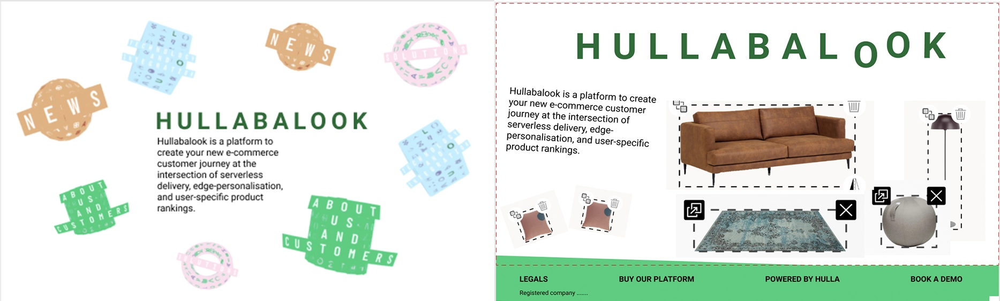
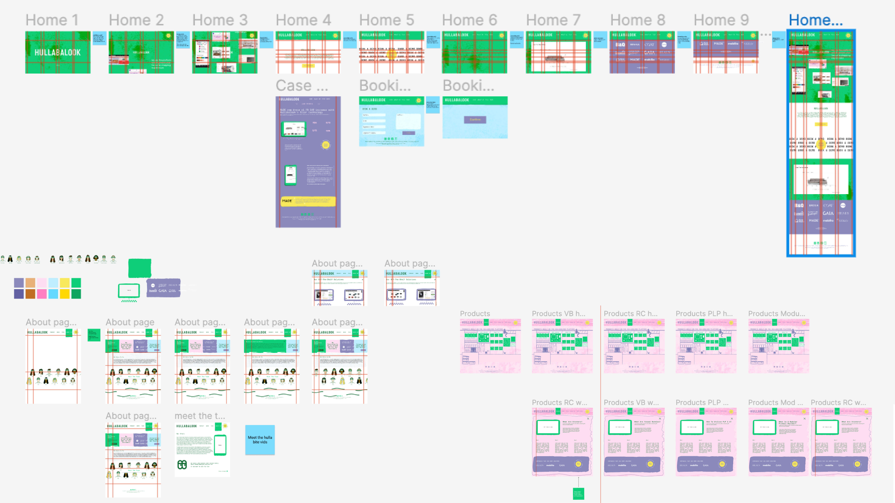

Website redesign and rebranding.
The client's website is still in the old branding, which suggests a need for a visual overhaul to align with their updated branding strategy.
Desired Update: The client wants the website to be refreshed with a new look but emphasises that they don't want it to appear overly corporate. This implies a desire for a modern and visually appealing design that resonates with their target audience.
The client expresses admiration for textural and paper effects used within your branding. This indicates an interest in incorporating these visual elements into the website design to add depth and visual interest.
Incorporating Textural and Paper Effects: The client specifically wants these effects to be integrated into the website design. This could involve techniques such as textured backgrounds, paper-like overlays, or other creative elements that mimic the look and feel of textured surfaces and paper.
While updating the website,
it's important to ensure that the new design remains consistent with the overall branding guidelines. This includes using the same colour palette, typography, and brand messaging to reinforce brand identity.
User Experience Considerations: The redesign should prioritise user experience, ensuring that the website is easy to navigate, visually engaging, and effectively communicates the client's message and offerings to visitors.
Mobile Responsiveness:
The updated website should be fully responsive across various devices and screen sizes, ensuring a seamless browsing experience for users on smartphones, tablets, and desktops.
SEO Optimisation:
Incorporating SEO best practices into the website redesign is crucial to improve visibility in search engine results and drive organic traffic to the site.
Integration of Functionalities:
Depending on the client's specific needs, the website may require integration of various functionalities such as contact forms, e-commerce capabilities, social media integration, etc.
Timeline and Budget:
Clearly outline the expected timeline for the website redesign project and discuss budget considerations to ensure alignment with the client's expectations and resources.
Below is the site pervious design.
Below are the initial designs. The feedback received indicates that the system was hard to navigate and needed to be simplified.

Below are is the final design, and high fed prototype, you can find it on hullabalook.com.
